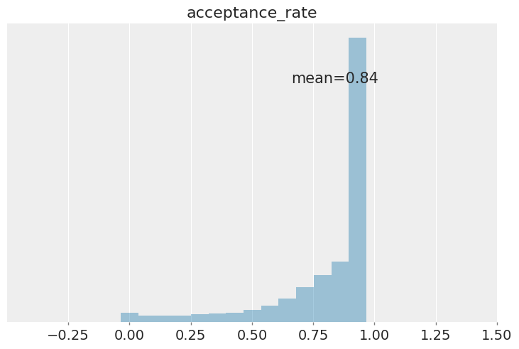
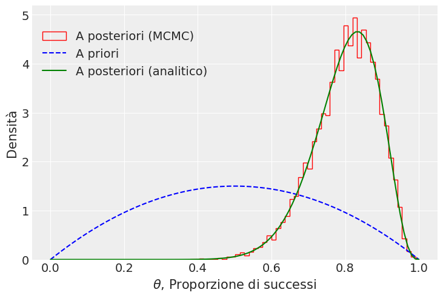
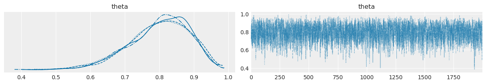

Markov Chain Monte Carlo per l’inferenza bayesiana
Contents
Markov Chain Monte Carlo per l’inferenza bayesiana#
Invece di scrivere il nostro campionatore e dover definire i nostri modelli statistici utilizzando le funzioni di scipy.stats, come abbiamo fatto nel capitolo precedente, possiamo sfruttare l’aiuto dei linguaggi di programmazione probabilistici (PPL). Questi strumenti consentono agli utenti di formulare i modelli bayesiani utilizzando il codice del PPL per poi eseguire l’inferenza bayesiana in modo abbastanza automatizzato. In breve, i PPL aiutano gli utenti a concentrarsi maggiormente sulla costruzione di modelli e meno sui dettagli matematici e computazionali. La disponibilità di tali strumenti ha contribuito ad aumentare la popolarità e l’utilità dei metodi bayesiani negli ultimi decenni.
In questo capitolo introdurremo PyMC, un pacchetto Python per la modellazione statistica bayesiana. Nel @sec-grid-metropolis abbiamo esaminato l’algoritmo Metropolis che consente di generare campioni da distribuzioni di probabilità basati sulla costruzione di una catena di Markov avente come distribuzione di equilibrio (o stazionaria) la distribuzione desiderata. Benché l’algoritmo Metropolis possa essere utilizzato per risolvere problemi più complessi di quello dell’esempio che abbiamo discusso, un suo limite risiede nel fatto che è poco efficiente – ovvero, nel caso di modelli complessi, richiede molto tempo per raggiungere una distribuzione stazionaria (ovvero, una distribuzione di probabilità che si mantiene costante all’evolversi nel tempo della catena di Markov). Sono stati messi a punto algoritmi Monte Carlo a catena di Markov (MCMC) che massimizzano l’efficienza nella velocità di esecuzione, come ad esempio, il campionatore No-U-Turn (NUTS), gli algoritmi Metropolis-Hastings, Gibbs Sampler e Hamiltonian Monte Carlo, e questi Universal Inference Engines (incluso l’algoritmo Metropolis) sono implementati in vari framework per la programmazione probabilistica (PP). PyMC e Stan [CGH+17] sono i due PPL più popolari. Con l’aiuto del framework PyMC è possibile definire modelli complessi, anche con molte migliaia di parametri, mediante una sintassi leggibile e intuitiva. In questo capitolo useremo PyMC per eseguire l’inferenza su una e su due proporzioni binomiali con Markov Chain Monte Carlo.
Il presidente Trump e l’idrossiclorochina#
Per fare un esempio concreto, consideriamo un set di dati reali. Cito dal Washington Post del 7 aprile 2020:
One of the most bizarre and disturbing aspects of President Trump’s nightly press briefings on the coronavirus pandemic is when he turns into a drug salesman. Like a cable TV pitchman hawking ‘male enhancement’ pills, Trump regularly extols the virtues of taking hydroxychloroquine, a drug used to treat malaria and lupus, as a potential ‘game changer’ that just might cure Covid-19.
Tralasciamo qui il fatto che il Donald Trump non sia un esperto in questo campo. Esaminiamo invece le evidenze iniziali a supporto dell’ipotesi che l’idrossiclorochina possa essere utile per la cura del Covid-19, ovvero le evidenze che erano disponibili nel momento in cui il Donald Trump ha fatto le affermazioni riportate sopra (in seguito, quest’idea è stata screditata). Tali evidenze sono state fornite da uno studio di [GLP+20]. Il disegno sperimentale di [GLP+20] comprende, tra le altre cose, il confronto tra una condizione sperimentale e una condizione di controllo. Il confronto importante è tra la proporzione di paziente positivi al virus SARS-CoV-2 nel gruppo sperimentale (a cui è stata somministrata l’idrossiclorochina; 6 su 14) e la proporzione di paziente positivi nel gruppo di controllo (a cui non è stata somministrata l’idrossiclorochina; ovvero 14 su 16). Obiettivo di questo capitolo è mostrare come si possa fare inferenza sui dati di [GLP+20] usando PyMC. Per semplicità, iniziamo considerando solo il gruppo di controllo.
Una proporzione#
Sulla base di ciò che è stato detto nel Distribuzioni coniugate, sappiamo che, quando i dati sono rappresentati da una proporzione \(\theta\), e quando utilizziamo una distribuzione a priori Beta per \(\theta\), la distribuzione a posteriori di \(\theta\) è specificata dallo schema beta-binomiale. Se scegliamo, ad esempio, una \(Beta(2, 2)\) quale distribuzione a priori per \(\theta\), il modello diventa:
dove la prima riga definisce la funzione di verosimiglianza e la seconda riga definisce la distribuzione a priori.
Per essere chiari, in questo caso particolare non è necessario utilizzare MCMC per stimare il posteriore poiché esiste già una soluzione analitica in forma chiusa. Tuttavia, la maggior parte dei modelli di inferenza bayesiana non ammette una soluzione in forma chiusa per il posteriore e quindi è necessario utilizzare MCMC. In questo esempio, applichiamo MCMC a un caso di cui “conosciamo già la risposta”, in modo da poter confrontare i risultati di una soluzione in forma chiusa e quella calcolata per approssimazione numerica.
Dedurre una proporzione binomiale con PyMC#
Ora eseguiremo la stessa analisi che abbiamo svolto in precedenza utilizzando invece il metodo numerico Markov Chain Monte Carlo. Suppoaniamo di avere già installato PyMC. Una volta installato, dobbiamo successivamente importare le librerie necessarie, che includono Matplotlib, Numpy, Scipy, Arviz e lo stesso PyMC.
import arviz as az
import matplotlib.pyplot as plt
import numpy as np
import pandas as pd
import pymc as pm
from scipy.stats import beta
import warnings
warnings.filterwarnings('ignore')
warnings.simplefilter('ignore')
RANDOM_SEED = 8927
rng = np.random.default_rng(RANDOM_SEED)
az.style.use("arviz-darkgrid")
plt.style.use('tableau-colorblind10')
print(f"Running on PyMC v{pm.__version__}")
Running on PyMC v5.0.0
Vediamo ora come specificare il modello beta-binomiale mediante PyMC. Per svolgere l’analisi mediante PyMC è necessario prima specificare la struttura del modello bayesiano e poi eseguire il campionamento dalla distribuzione a posteriori. Esaminiamo questi due passaggi per l’esempio presente.
Dati#
I dati sono i seguenti.
ntrials = 16
y = 14
Specificare il modello#
Ora definiamo una distribuzione Beta a priori e il modello di probabilità Binomiale. Questi sono i parametri della distribuzione Beta.
alpha_prior = 2
beta_prior = 2
PyMC ha un’API molto pulita per eseguire questa operazione. Si usa un context with di Python per assegnare tutti i parametri, le dimensioni dei passaggi e i valori iniziali a un’istanza pymc.Model (che denominiamo bb_model).
bb_model = pm.Model()
with bb_model:
# Prior
theta = pm.Beta("theta", alpha=alpha_prior, beta=beta_prior)
# Likelihood
obs = pm.Binomial("obs", p=theta, n=ntrials, observed=y)
La prima linea di codice
bb_model = pm.Model()
crea un nuovo oggetto di classe Model che è un contenitore per le variabili casuali del modello. Dopo l’istanziazione del modello, la successiva specificazione delle componenti del modello viene eseguita all’interno di un’istruzione with:.
Questo crea un context manager, con il nostro bb_model come contesto, che include tutte le istruzioni fino alla fine del blocco indentato. Ciò significa che tutti gli oggetti PyMC introdotti nel blocco di codice indentato sotto l’istruzione with: vengono aggiunti al modello. In assenza di questo idioma del context manager, saremmo costretti ad associare manualmente ciascuna delle variabili a bb_model.
Con la chiamata del costruttore pm.Beta si crea una variabile casuale da usare come distribuzione a priori. Il primo argomento è sempre il nome della variabile casuale, che dovrebbe corrispondere al nome della variabile Python assegnata, poiché a volte viene utilizzato per recuperare la variabile dal modello per riassumere l’output. I restanti argomenti richiesti per un oggetto stocastico sono i parametri, in questo caso alpha e beta, a cui assegniamo i valori degli iperparametri del modello. Nel caso presente, usiamo i valori alpha_prior e beta_prior come parametri della distribuzione Beta a priori.
La riga finale del modello definisce obs, la distribuzione campionaria della variabile di esito nel set di dati. Questo è un caso speciale di variabile stocastica chiamata observed stochastic, la quale rappresenta la verosimiglianza dei dati del modello. Tale variabile stocastica è identica alle altre variabili stocastiche, tranne per l’argomento obs, il quale indica che i valori per questa variabile sono stati osservati e non devono essere modificati dal modello. I dati possono essere passati sotto forma di oggetto ndarray o DataFrame. Nel caso presente, per la funzione di verosimiglianza Binomiale specificando il parametro p=theta, il numero di prove n=ntrials e il numero di successi observed=y.
Si noti che, a differenza delle distribuzioni a priori del modello, i parametri per la distribuzione Beta di obs non sono valori fissi, ma piuttosto corrispondono all’oggetto stocastico theta. Questo crea una relazione genitore-figlio tra la verosimiglianza e questa variabile.
Campionamento#
Eseguiamo il campionamento MCMC usando l’algoritmo di default (NUTS) e salviamo i risultati nell’oggetto idata.
with bb_model:
step = pm.NUTS()
idata = pm.sample(2000, tune=1000, init=None, step=step, chains=4)
Multiprocess sampling (4 chains in 4 jobs)
NUTS: [theta]
Sampling 4 chains for 1_000 tune and 2_000 draw iterations (4_000 + 8_000 draws total) took 18 seconds.
La funzione sample esegue il metod0 step assegnati (o passati) ad essa per il numero specificato di iterazioni e restituisce un oggetto InferenceData contenente i campioni raccolti, insieme ad altri attributi utili come le statistiche dell’esecuzione del campionamento e una copia dei dati osservati. Si noti che sample genera una serie di catene parallele, a seconda del numero di core di calcolo presenti sulla macchina.
Nota
InferenceData è un formato di dati specificamente progettato per le analisi bayesiane MCMC. Lo scopo principale dell’oggetto InferenceData è fornire un modo conveniente per archiviare e manipolare le informazioni generate durante un flusso di lavoro bayesiano, inclusi campioni dalle distribuzioni a posteriori, a priori, distribuzioni predittive a posteriori, distribuzioni predittive a priori e altre informazioni e diagnostiche generate durante il campionamento.
Avendo assunto una distribuzione a priori per il parametro \(\theta\), l’algoritmo procede in maniera ciclica, correggendo la distribuzione a priori di \(\theta\) condizionandola ai valori già generati. Dopo un certo numero di cicli, necessari per portare l’algoritmo a convergenza, i valori estratti possono essere assunti come campionati dalla distribuzione a posteriori di \(\theta\).
Al crescere del numero di passi della catena, la distribuzione di target viene sempre meglio approssimata. All’inizio del campionamento, però, la distribuzione può essere significativamente lontana da quella stazionaria, e ci vuole un certo tempo prima di raggiungere la distribuzione stazionaria di equilibrio, detto, appunto, periodo di burn-in. I campioni provenienti da tale parte iniziale della catena vanno tipicamente scartati perché possono non rappresentare accuratamente la distribuzione a posteriori.
Il tempo di campionamento dipende dalla velocità del computer a disposizione.
idata
-
<xarray.Dataset> Dimensions: (chain: 4, draw: 2000) Coordinates: * chain (chain) int64 0 1 2 3 * draw (draw) int64 0 1 2 3 4 5 6 7 ... 1993 1994 1995 1996 1997 1998 1999 Data variables: theta (chain, draw) float64 0.8736 0.8244 0.8063 ... 0.7361 0.6479 0.9334 Attributes: created_at: 2023-01-06T08:51:16.393006 arviz_version: 0.14.0 inference_library: pymc inference_library_version: 5.0.0 sampling_time: 18.116766214370728 tuning_steps: 1000 -
<xarray.Dataset> Dimensions: (chain: 4, draw: 2000) Coordinates: * chain (chain) int64 0 1 2 3 * draw (draw) int64 0 1 2 3 4 5 ... 1995 1996 1997 1998 1999 Data variables: (12/17) acceptance_rate (chain, draw) float64 1.0 1.0 1.0 ... 0.5982 0.7693 diverging (chain, draw) bool False False False ... False False process_time_diff (chain, draw) float64 0.000217 0.000229 ... 0.000343 tree_depth (chain, draw) int64 1 1 1 2 1 1 2 1 ... 1 1 2 1 2 2 2 largest_eigval (chain, draw) float64 nan nan nan nan ... nan nan nan energy_error (chain, draw) float64 -0.01792 -0.1439 ... 0.5304 ... ... n_steps (chain, draw) float64 1.0 1.0 1.0 3.0 ... 3.0 3.0 3.0 reached_max_treedepth (chain, draw) bool False False False ... False False perf_counter_diff (chain, draw) float64 0.0002157 ... 0.0003427 step_size_bar (chain, draw) float64 1.199 1.199 ... 1.305 1.305 perf_counter_start (chain, draw) float64 15.95 15.95 ... 17.84 17.84 index_in_trajectory (chain, draw) int64 -1 -1 1 1 -1 1 ... 1 0 1 -1 1 -2 Attributes: created_at: 2023-01-06T08:51:16.408785 arviz_version: 0.14.0 inference_library: pymc inference_library_version: 5.0.0 sampling_time: 18.116766214370728 tuning_steps: 1000 -
<xarray.Dataset> Dimensions: (obs_dim_0: 1) Coordinates: * obs_dim_0 (obs_dim_0) int64 0 Data variables: obs (obs_dim_0) int64 14 Attributes: created_at: 2023-01-06T08:51:16.414148 arviz_version: 0.14.0 inference_library: pymc inference_library_version: 5.0.0
I vari attributi dell’oggetto InferenceData possono essere estratti come nel caso di un dict contenente coppie composte da una chiave e un valore separati tra loro dal simbolo dei due punti. In questo caso le chiavi sono i nomi delle variabili e i valori sono dei numpy.arrays. Ad esempio, possiamo recuperare la traccia di campionamento dalla variabile latente theta nel modo seguente.
idata.posterior["theta"]
<xarray.DataArray 'theta' (chain: 4, draw: 2000)>
array([[0.87361943, 0.82444429, 0.8062556 , ..., 0.77839572, 0.75537174,
0.78611951],
[0.70878246, 0.72609274, 0.69064337, ..., 0.74853406, 0.74853406,
0.75741179],
[0.71924551, 0.73986519, 0.76155349, ..., 0.91748837, 0.48381816,
0.75380058],
[0.79308632, 0.79808486, 0.79954685, ..., 0.73606866, 0.64789043,
0.93339393]])
Coordinates:
* chain (chain) int64 0 1 2 3
* draw (draw) int64 0 1 2 3 4 5 6 7 ... 1993 1994 1995 1996 1997 1998 1999Si noti che l’oggetto ritornato è un array
idata.posterior["theta"].shape
(4, 2000)
di dimensioni 4 \(\times\) 2000 (sul mio computer). Per visualizzare il primi 10 valori della prima catena, ad esempio, usiamo:
idata.posterior["theta"][0, 1:10]
<xarray.DataArray 'theta' (draw: 9)>
array([0.82444429, 0.8062556 , 0.72755967, 0.74853538, 0.78390048,
0.77206782, 0.77206782, 0.68691078, 0.81707379])
Coordinates:
chain int64 0
* draw (draw) int64 1 2 3 4 5 6 7 8 9Se volessimo utilizzare l’algoritmo di campionamento Metropolis invece di NUTS (che è stato assegnato di default), possiamo specificare questo come argomento step per sample.
with bb_model:
# Instantiate sampler
step = pm.Metropolis()
# Draw 5000 posterior samples
metropolis_idata = pm.sample(5000, step=step)
Multiprocess sampling (4 chains in 4 jobs)
Metropolis: [theta]
Sampling 4 chains for 1_000 tune and 5_000 draw iterations (4_000 + 20_000 draws total) took 16 seconds.
Analisi a posteriori#
Esaminiamo l’accettanza.
az.plot_posterior(
idata, group="sample_stats", var_names="acceptance_rate",
hdi_prob="hide", kind="hist"
)
<AxesSubplot: title={'center': 'acceptance_rate'}>

Estraiamo le stime a posteriori di \(\theta\) da idata.
posterior = az.extract(idata)
Le stime a posteriori di \(\theta\) sono accessibili nel modo seguente.
posterior['theta']
<xarray.DataArray 'theta' (sample: 8000)>
array([0.87361943, 0.82444429, 0.8062556 , ..., 0.73606866, 0.64789043,
0.93339393])
Coordinates:
* sample (sample) object MultiIndex
* chain (sample) int64 0 0 0 0 0 0 0 0 0 0 0 0 ... 3 3 3 3 3 3 3 3 3 3 3 3
* draw (sample) int64 0 1 2 3 4 5 6 ... 1993 1994 1995 1996 1997 1998 1999Dato che posterior['theta'] è una lista, possiamo facilmente calcolare la media a posteriori
posterior['theta'].mean()
<xarray.DataArray 'theta' ()> array(0.79913968)
oppure la mediana a posteriori di \(\theta\)
posterior['theta'].median()
<xarray.DataArray 'theta' ()> array(0.80884937)
La deviazione standard della stima a posteriori è
np.std(posterior['theta'])
<xarray.DataArray 'theta' ()> array(0.08795391)
Per semplicità, salvo le stime a posteriori di \(\theta\) in un array.
p_post = posterior['theta']
Possiamo ora fare inferenza usando i risultati ottenuti. Un sommario della distribuzione a posteriori si ottiene con il metodo az.summary().
az.summary(idata, hdi_prob=.95, round_to=3)
| mean | sd | hdi_2.5% | hdi_97.5% | mcse_mean | mcse_sd | ess_bulk | ess_tail | r_hat | |
|---|---|---|---|---|---|---|---|---|---|
| theta | 0.799 | 0.088 | 0.629 | 0.953 | 0.001 | 0.001 | 3354.026 | 4082.714 | 1.001 |
Si ottiene così l’intervallo di credibilità a più alta densità a posteriori (HPD) al 95%. Questo intervallo ci informa sul fatto che, a posteriori, possiamo essere certi al 95%, che il vero valore del parametro \(\theta\) sia contenuto nell’intervallo [0.625, 0.95].
L’output grafico dell’analisi è riportato nel grafico seguente.
# Posterior: Beta(alpha + y, beta + n - y)
alpha_post = alpha_prior + y
beta_post = beta_prior + ntrials - y
plt.hist(
p_post,bins=50,
histtype="step", density=True,
label="A posteriori (MCMC)", color="red"
)
# Plot the analytic prior and posterior beta distributions
x = np.linspace(0, 1, 100)
plt.plot(
x, beta.pdf(x, alpha_prior, beta_prior),
"--", label="A priori", color="blue"
)
plt.plot(
x, beta.pdf(x, alpha_post, beta_post),
label='A posteriori (analitico)', color="green"
)
# Update the graph labels
plt.legend(title=" ", loc="best")
plt.xlabel("$\\theta$, Proporzione di successi")
plt.ylabel("Densità")
plt.show()

In questo esempio, con 8,000 campioni, la convergenza dell’algoritmo NUTS è estremamente buona. L’istogramma segue da vicino la distribuzione a posteriori calcolata analiticamente, come da previsione.
Un tracciato della catena di Markov illustra questa esplorazione rappresentando il valore \(\theta\) sulle ordinate e l’indice progressivo di in ogni iterazione sull’ascissa. Il trace plot è estremamente utile per valutare la convergenza di un algoritmo MCMC e se è necessario escludere un periodo di campioni iniziali (noto come burn-in). Per produrre la traccia chiamiamo semplicemente az.plot_trace() con la variabile idata:
az.plot_trace(idata)
plt.show()

La traccia descrive il comportamento longitudinale delle catene di Markov. Possiamo usare il metodo az.plot_trace() per visualizzare sia la traccia sia una stima della densità del kernel (KDE) dell’istogramma delle stime a posteriori, ovvero, dei valori che le catene MCMC visitano lungo il loro percorso, ignorando l’ordine di queste visite. Da notare come la stima di KDE della convinzione a posteriori nella probabilità di efficacia dell’idrossiclorochina riflette sia la convinzione a priori di 𝜎=0.22 che i nostri dati con una correttezza campionaria di 𝜎=0.09. Inoltre possiamo vedere che la procedura di campionamento MCMC è “convergente alla distribuzione” poiché la serie di campionamento sembra stazionaria.
Svolgendo un’analisi bayesiana simile a questa, [GLP+20] hanno trovato che gli intervalli di credibilità del gruppo di controllo e del gruppo sperimentale non si sovrappongono. Questo fatto viene interpretato dicendo che il parametro \(\theta\) è diverso nei due gruppi. Sulla base di queste evidenza, [GLP+20] hanno concluso, con un grado di certezza soggettiva del 95%, che nel gruppo sperimentale vi è una probabilità più bassa di risultare positivi al SARS-CoV-2 rispetto al gruppo di controllo. In altri termini, l’analisi statistica condotta da [GLP+20] suggerisce che l’idrossiclorochina è una terapia efficace per il Covid-19.
La critica di [HWD+20]#
Un articolo pubblicato da [HWD+20] si è posto il problema di rianalizzare i dati di [GLP+20].1 Tra gli autori di questo articolo figura anche Eric-Jan Wagenmakers, uno psicologo molto conosciuto per i suoi contributi metodologici. [HWD+20] osservano che, nelle loro analisi statistiche, [GLP+20] hanno escluso alcuni dati. Nel gruppo sperimentale, infatti, vi erano alcuni pazienti i quali, anziché migliorare, sono in realtà peggiorati. L’analisi statistica di [GLP+20] ha escluso i dati di questi pazienti. Se consideriamo tutti i pazienti — non solo quelli selezionati da [GLP+20] — la situazione diventa la seguente:
gruppo sperimentale: 10 positivi su 18;
gruppo di controllo: 14 positivi su 16.
L’analisi dei dati proposta da @Hulme_2020 richiede l’uso di alcuni strumenti statistici che, in queste dispense, non verranno discussi. Ma possiamo giungere alle stesse conclusioni raggiunte da questi ricercatori anche usando le procedure statistiche descritte nel Paragrafo successivo.
Due proporzioni#
Svolgiamo ora l’analisi statistica considerando tutti i dati, come suggerito da @Hulme_2020. Per fare questo verrà creato un modello bayesiano per fare inferenza sulla differenza tra due proporzioni. Dopo avere generato le distribuzioni a posteriori per le proporzioni di “successi” nei due gruppi, calcoleremo la quantità
ovvero il rapporto tra gli Odds di positività tra i pazienti del gruppo di controllo e gli Odds di positività tra i pazienti del gruppo sperimentale. Se il valore dell’OR è uguale a 1, significa che l’Odds di positività nel gruppo di controllo è uguale all’Odds di positività nel gruppo sperimentale, cioè il fattore in esame (somministrazione dell’idrossiclorochina) è ininfluente sulla comparsa della malattia. L’inferenza statistica sull’efficacia dell’idrossiclorochina come terapia per il Covid-19 può dunque essere effettuata esaminando l’intervallo di credibilità al 95% per l’OR: se tale intervallo include il valore 1, allora non c’è evidenza che l’idrossiclorochina sia efficace come terapia per il Covid-19.
Nell’implementazione di questo modello, la quantità di interesse è l’odds ratio; tale quantità viene calcolata nel blocco generated quantities. Per i parametri \(\theta_1\) e \(\theta_2\) useremo delle distribuzioni a priori debolmente informative il cui scopo è la regolarizzazione dei dati.
Elenco i dati dei due gruppi.
# Define the data for proportion 1
y1 = 14
n1 = 16
# Define the data for proportion 2
y2 = 10
n2 = 18
Definisco il modello.
with pm.Model() as model:
# Define the priors for the two proportions
p1 = pm.Beta('p1', alpha=2, beta=2)
p2 = pm.Beta('p2', alpha=2, beta=2)
# Define the likelihood functions for the two proportions
likelihood1 = pm.Binomial('likelihood1', n=n1, p=p1, observed=y1)
likelihood2 = pm.Binomial('likelihood2', n=n2, p=p2, observed=y2)
# Define the difference of odds model
odds_ratio = pm.Deterministic('odds_ratio', (p1/(1-p1))/(p2/(1-p2)))
Eseguo il campionamento MCMC.
with model:
trace = pm.sample(draws=5000, tune=1000)
Auto-assigning NUTS sampler...
Initializing NUTS using jitter+adapt_diag...
Multiprocess sampling (4 chains in 4 jobs)
NUTS: [p1, p2]
Sampling 4 chains for 1_000 tune and 5_000 draw iterations (4_000 + 20_000 draws total) took 20 seconds.
---------------------------------------------------------------------------
KeyboardInterrupt Traceback (most recent call last)
Cell In[23], line 2
1 with model:
----> 2 trace = pm.sample(draws=5000, tune=1000)
File ~/opt/anaconda3/envs/bambi_env/lib/python3.8/site-packages/pymc/sampling/mcmc.py:619, in sample(draws, step, init, n_init, initvals, trace, chains, cores, tune, progressbar, model, random_seed, discard_tuned_samples, compute_convergence_checks, callback, jitter_max_retries, return_inferencedata, keep_warning_stat, idata_kwargs, mp_ctx, **kwargs)
614 warnings.warn(
615 "The number of samples is too small to check convergence reliably.",
616 stacklevel=2,
617 )
618 else:
--> 619 convergence_warnings = run_convergence_checks(idata, model)
620 mtrace.report._add_warnings(convergence_warnings)
622 if return_inferencedata:
623 # By default we drop the "warning" stat which contains `SamplerWarning`
624 # objects that can not be stored with `.to_netcdf()`.
File ~/opt/anaconda3/envs/bambi_env/lib/python3.8/site-packages/pymc/stats/convergence.py:108, in run_convergence_checks(idata, model)
105 warnings.append(warn)
107 warnings += warn_divergences(idata)
--> 108 warnings += warn_treedepth(idata)
110 return warnings
File ~/opt/anaconda3/envs/bambi_env/lib/python3.8/site-packages/pymc/stats/convergence.py:147, in warn_treedepth(idata)
145 warnings = []
146 for c in treedepth.chain:
--> 147 if sum(treedepth.sel(chain=c)) / treedepth.sizes["draw"] > 0.05:
148 warnings.append(
149 SamplerWarning(
150 WarningType.TREEDEPTH,
(...)
154 )
155 )
156 return warnings
File ~/opt/anaconda3/envs/bambi_env/lib/python3.8/site-packages/xarray/core/_typed_ops.py:206, in DataArrayOpsMixin.__add__(self, other)
205 def __add__(self, other):
--> 206 return self._binary_op(other, operator.add)
File ~/opt/anaconda3/envs/bambi_env/lib/python3.8/site-packages/xarray/core/dataarray.py:4358, in DataArray._binary_op(self, other, f, reflexive)
4354 other_variable = getattr(other, "variable", other)
4355 other_coords = getattr(other, "coords", None)
4357 variable = (
-> 4358 f(self.variable, other_variable)
4359 if not reflexive
4360 else f(other_variable, self.variable)
4361 )
4362 coords, indexes = self.coords._merge_raw(other_coords, reflexive)
4363 name = self._result_name(other)
File ~/opt/anaconda3/envs/bambi_env/lib/python3.8/site-packages/xarray/core/_typed_ops.py:396, in VariableOpsMixin.__add__(self, other)
395 def __add__(self, other):
--> 396 return self._binary_op(other, operator.add)
File ~/opt/anaconda3/envs/bambi_env/lib/python3.8/site-packages/xarray/core/variable.py:2641, in Variable._binary_op(self, other, f, reflexive)
2637 with np.errstate(all="ignore"):
2638 new_data = (
2639 f(self_data, other_data) if not reflexive else f(other_data, self_data)
2640 )
-> 2641 result = Variable(dims, new_data, attrs=attrs)
2642 return result
File ~/opt/anaconda3/envs/bambi_env/lib/python3.8/site-packages/xarray/core/variable.py:366, in Variable.__init__(self, dims, data, attrs, encoding, fastpath)
346 def __init__(self, dims, data, attrs=None, encoding=None, fastpath=False):
347 """
348 Parameters
349 ----------
(...)
364 unrecognized encoding items.
365 """
--> 366 self._data = as_compatible_data(data, fastpath=fastpath)
367 self._dims = self._parse_dimensions(dims)
368 self._attrs = None
File ~/opt/anaconda3/envs/bambi_env/lib/python3.8/site-packages/xarray/core/variable.py:287, in as_compatible_data(data, fastpath)
284 else:
285 data = np.asarray(data)
--> 287 if not isinstance(data, np.ndarray) and (
288 hasattr(data, "__array_function__") or hasattr(data, "__array_namespace__")
289 ):
290 return data
292 # validate whether the data is valid data types.
KeyboardInterrupt:
Esamino i risulati.
az.hdi(trace, hdi_prob=.95)
<xarray.Dataset>
Dimensions: (hdi: 2)
Coordinates:
* hdi (hdi) <U6 'lower' 'higher'
Data variables:
p1 (hdi) float64 0.6274 0.9512
p2 (hdi) float64 0.3428 0.742
odds_ratio (hdi) float64 0.3564 12.75L’intervallo di credibilità del 95% per l’OR include il valore di 1.0 (ovvero, il valore che indica che gli Odds di positività sono uguali nei due gruppi). In base agli standard correnti, un risultato di questo tipo non viene considerato come evidenza sufficiente per potere concludere che il parametro \(\theta\) assume un valore diverso nei due gruppi. In conclusione, se consideriamo tutti i dati, e non solo quelli selezionati da [GLP+20], non vi sono evidenze sull’efficacia dell’idrossiclorochina come terapia per il Covid-19.
Commenti e considerazioni finali#
La ricerca di [GLP+20] include altre informazioni e altre analisi statistiche che non sono state qui considerate. Tuttavia, notiamo che la semplice analisi statistica che abbiamo qui descritto è stata in grado di replicare le conclusioni a cui sono giunti (per altra via) [HWD+20].
- 1
Si veda https://osf.io/5dgmx/.